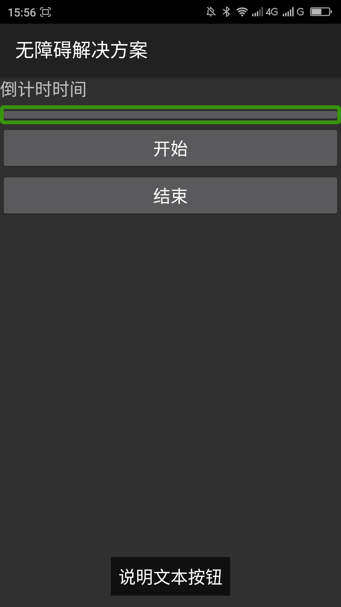

屏蔽控件的焦点
【问题描述】
一些背景图片、分隔符等不能操作没有什么实际意义的控件的焦点应该屏蔽，这样可以加快用焦点导航的用户浏览界面的速度，让用户更快的找到自己想操作的控件。
【问题代码】
【问题解决方案描述】
可以把android:focusable的属性设置为false来屏蔽焦点。此种方法只对用焦点导航的设备有效，如键盘、轨迹球、d-pad等。对于开启TalkBack等屏幕阅读器等无障碍服务在触摸屏下浏览界面元素的焦点无效。
【前后效果图对比】
|  | |
| 优化前，键盘浏览："说明文本按钮"有焦点； | 优化后，键盘浏览：”说明文本按钮“焦点被屏蔽； |